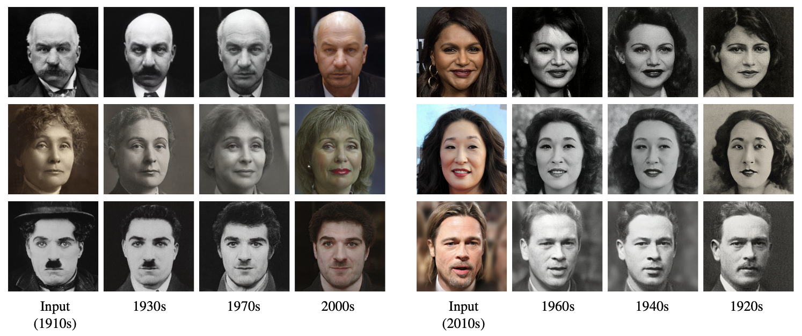

What would you (or someone you know) look like, if you had lived during a different time?
Given a portrait image, our approach generates plausible renditions of how that portrait might have looked like, had it been captured in different decades between the 19th and 21st centuries. Our framework captures characteristic styles across decades while maintaining the person's identity.

From top left to bottom right: J.P. Morgan, Mindy Kaling, Emmeline Pankhurst, Sandra Oh, Charlie Chaplin, Brad Pitt.
In this work, we present the new task of transforming faces through time, and a method for this task built upon StyleGAN2. We also provide a large, diverse and high-quality dataset, Faces Through Time, to serve this task, as well as a variety of other tasks in computer vision and graphics.
How can one visually characterize people in a decade? In this work, we assemble the Faces Through Time dataset, which contains over a thousand portrait images from each decade, spanning the 1880s to the present day. Using our new dataset, we present a framework for resynthesizing portrait images across time, imagining how a portrait taken during a particular decade might have looked like, had it been taken in other decades. Our framework optimizes a family of per-decade generators that reveal subtle changes that differentiate decades—such as different hairstyles or makeup—while maintaining the identity of the input portrait. Experiments show that our method is more effective in resynthesizing portraits across time compared to state-of-the-art image-to-image translation methods, as well as attribute-based and language-guided portrait editing models.
Our Faces Through Time Dataset
Faces Through Time (FTT) features 26,247 images of notable people from the 19th to 21st centuries, with roughly 1,900 images per decade on average. It is sourced from Wikimedia Commons, a crowdsourced and open-licensed collection of 50M images.
Random samples from five decades in the Faces Through Time Dataset.
This work was supported in part by the National Science Foundation (IIS-2008313).
Citation
@misc{chen2022:faces-through-time,
title={What's in a Decade? Transforming Faces Through Time},
author={Eric Ming Chen and Jin Sun and Apoorv Khandelwal and Dani Lischinski and Noah Snavely and Hadar Averbuch-Elor},
year={2022},
eprint={2210.06642},
archivePrefix={arXiv},
primaryClass={cs.CV}
}